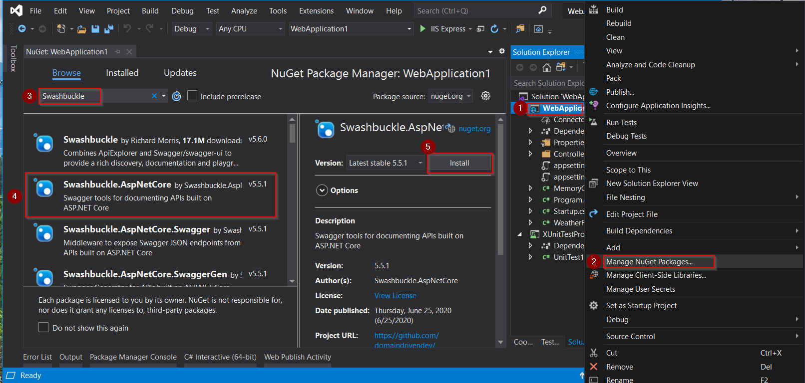

This post is an overview of how to install and configure Swagger for .NET Core. If you are searching for tips & tricks, you might be interested in the article: Swagger in .NET Core: Tips & Tricks.
Swagger is an open-source software framework backed by a large ecosystem of tools that helps developers design, build, document, and consume RESTful web services. While most users identify Swagger by the Swagger UI tool, the Swagger toolset includes support for automated documentation, code generation, and test-case generation.
Some of these tools are:
Swagger for .NET Core comes by the name Swashbuckle.AspNetCore, and it is actually composed of three components which you can potentially install seperately:
Assuming you installed nuget packages before, installation is very easy! Just follow the next steps to install Swashbuckle.AspNetCore nuget package from Visual Studio:

Swashbuckle.AspNetCoreSwashbuckle.AspNetCoreGetting started with swagger is extremely easy, since you just need to register the three components contained in the Swashbuckle.AspNetCore in startup.cs.
If your project calls
AddMvcCore()(and notAddMvc()), theAddApiExplorer()method must be explicitly called. Check the following link for more information, see Swashbuckle, ApiExplorer, and Routing.
First, add the Swagger generator to the services collection in the Startup.ConfigureServices method:
public void ConfigureServices(IServiceCollection services)
{
//...
// Register the Swagger generator, defining 1 or more Swagger documents
services.AddSwaggerGen();
//...
}And then in the Startup.Configure method, enable the middleware for serving the generated JSON document and the Swagger UI:
public void Configure(IApplicationBuilder app)
{
//...
// Enable middleware to serve generated Swagger as a JSON endpoint.
app.UseSwagger();
// Enable middleware to serve swagger-ui (HTML, JS, CSS, etc.),
// specifying the Swagger JSON endpoint.
app.UseSwaggerUI(c =>
{
c.SwaggerEndpoint("/swagger/v1/swagger.json", "My API V1");
});
//...
}Setting up swagger is very easy -you just follow the “Getting Started” guide above-, but swagger is so much more than that. If you want to find out how to setup an interactive documentation based on Swagger, along with some other tips and tricks, read the post “Swagger in .NET Core: Tips & Tricks“.